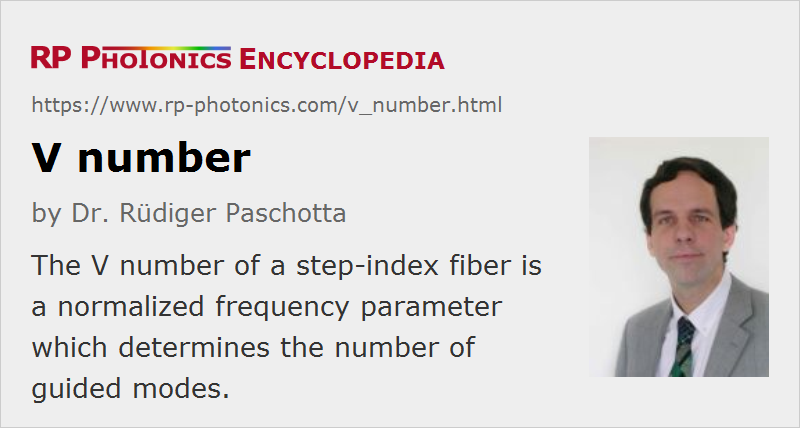

V Number
Definition: a normalized frequency parameter, which determines the number of modes of a step-index fiber
Category: fiber optics and waveguides
Formula symbol: V
Units: (dimensionless number)
How to cite the article; suggest additional literature
Author: Dr. Rüdiger Paschotta
The V number is a dimensionless parameter which is often used in the context of step-index fibers. It is defined as
where λ is the vacuum wavelength, a is the radius of the fiber core, and NA is the numerical aperture. Of course, the V number should not be confused with some velocity v, e.g. the phase velocity of light, and also not with the Abbe number, which is also sometimes called V-number.
The V number can be interpreted as a kind of normalized optical frequency. (It is proportional to the optical frequency, but rescaled depending on waveguide properties.) It is relevant for various essential properties of a fiber:
- For V values below ≈ 2.405, a fiber supports only one mode per polarization direction (→ single-mode fibers).
- Multimode fibers can have much higher V numbers. For large values, the number of supported modes of a step-index fiber (including polarization multiplicity) can be calculated approximately as
- The V number determines the fraction of the optical power in a certain mode which is confined to the fiber core. For single-mode fibers, that fraction is low for low V values (e.g. below 1), and reaches ≈ 90% near the single-mode cut-off at V ≈ 2.405.
- There is also the so-called Marcuse equation for estimating the mode radius of a step-index fiber from the V number; see the article on mode radius.
- A low V number makes a fiber sensitive to micro-bend losses and to absorption losses in the cladding. However, a high V number may increase scattering losses in the core or at the core–cladding interface.
For certain types of photonic crystal fibers, an effective V number can be defined, where ncladding is replaced with an effective cladding index. The same equations as for step-index fibers can then be used for calculating quantities such as the single-mode cut-off, mode radius and splice losses.
Questions and Comments from Users
Here you can submit questions and comments. As far as they get accepted by the author, they will appear above this paragraph together with the author’s answer. The author will decide on acceptance based on certain criteria. Essentially, the issue must be of sufficiently broad interest.
Please do not enter personal data here; we would otherwise delete it soon. (See also our privacy declaration.) If you wish to receive personal feedback or consultancy from the author, please contact him e.g. via e-mail.
By submitting the information, you give your consent to the potential publication of your inputs on our website according to our rules. (If you later retract your consent, we will delete those inputs.) As your inputs are first reviewed by the author, they may be published with some delay.
Bibliography
| [1] | A. W. Snyder and J. D. Love, Optical Waveguide Theory, Chapman and Hall, London (1983) |
See also: fibers, step-index fibers, fiber core, numerical aperture, single-mode fibers, multimode fibers, Abbe number
and other articles in the category fiber optics and waveguides
|  |
If you like this page, please share the link with your friends and colleagues, e.g. via social media: 


These sharing buttons are implemented in a privacy-friendly way! |
2020-06-14
What is the relation between V number and power flow in cladding?
Answer from the author:
Tentatively, for fibers with low V number a larger fraction of the total optical power propagates in the fiber cladding. The numerical value, however, depends on the details, not just the V number.